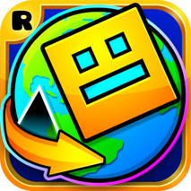
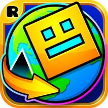

This website is about Geometry Dash. Geometry Dash is a game that you jump over spikes and can unlock new levals. How you play
this game is by tapping your screen to jump there are rocketships in the game and to fly those you have to hold your screen to fly up
and let go of your screen to fly down. In some of the harder levals you have to fly a rocket ship upside down then you just have
to do the opposite of flying it right side up. There are also UFO's in the game and to use those you just have to keep on
tapping and avoid the spikes.
There are many feautures in Geometry dash for examlpe you can unlock many different charecters and colours. Geometry dash was designed by robtop
games. This game was published by Robtop Games and the developers for this game is Robtop Games and Robert Topola. Geometry Dash was realised in
August 2013 on iphone and android. Later, it was realised on December 2014 on Microsoft.
Some Related Games To Geometry Dash
1. Geometry Dash World
2. Geometry Dash Meltdown
3. Geometry Dash Sub zero


 

These Are Some Links To Tell You More About The Game
Reviews From Common sense Media
Geometry Dash Fandom
Trailer For Geometry Dash
Appstore Review
Play Geometry Dash